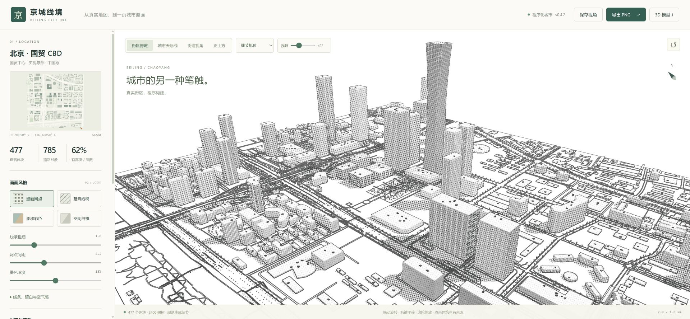

BEIJING CITY INK / DISTANT FACADES / 2026.10.30
远处的建筑，也保留自己的性格。
v0.4.1 → v0.4.2：细窗、宽尺度窗带与材质明暗分开处理。拉远时，楼栋逐渐简化，而不是一起变成相同网点。改动属于通用渲染和放样能力。
6组同相机、同参数的新旧证据
70 / 70测试通过，生产构建通过
现有6遍复用光照通道，无新增几何或场景遍次

v0.4.1 优化前v0.4.2 优化后本地新旧均为1920×889截图，机位、FOV、种子、光照一致。原版仅作视觉机制参考，未与本地精确配准。主视图可切换，中间滑杆可拖动。
为什么原来会“一楼一纹”变成“所有楼一个纹”
旧版在细窗缩小时将整份立面墨色一起淡掉，后处理又做一次阈值过滤。彩色画面仍保留平均玻璃覆盖，漫画却只剩中性光照与网点。同朝向的不同材质最终被画成相近灰面。
| 需求 | 引擎改动 | 验收范围 |
|---|
| 远楼保留身份 | 独立传递细节墨线与平均玻璃灰度。白墙、玻璃、反射与稳定的建筑变体继续影响远景。 | 中景、天际线与极远景；很小的体块只保留明暗，不承诺单窗可见。 |
| 横带与竖向组带 | 横纵轴各自过滤；宽材质组带共享同一布局，并在接近网点单元大小时连续退回平均材质。 | 保留方向节奏，减轻细窗与屏幕网点叠加。不是实测立面。 |
| 曲面竖纹连续 | 放样各层共享参考周长，避免收腰/外扩时重新计算窗格数量造成纹理扭转。 | 通用放样单元测试验证相邻层UV完全接合；现有中国尊模型作为实际实例。 |
| 交互与兼容 | 窗户开关、材质参数与网点大小共用实时状态，重估种子后重新关联。 | 漫画、线稿、彩色、白模和PNG导出；保留OSM来源标注。 |
独立人工评分
只评价本次立面专项；不是实景还原率，也不重算历史总分。完整依据见独立验收。
| 维度 | v0.4.1 | v0.4.2 |
|---|
| 拉远后的立面类型辨识 | 2 / 10 | 7.5 / 10 |
| 细窗消失后的大节奏 | 2 / 10 | 7.5 / 10 |
| 玻璃与实体墙明暗层次 | 3 / 10 | 7 / 10 |
| 细碎纹理的克制程度 | 7.5 / 10 | 6.5 / 10 |
| 近景窗格与窗框可读性 | 8 / 10 | 8 / 10 |
旧版虽丢失类型但更安静，因此噪声项明确扣分；增加细节不等于每一项都变好。
原版的直接证据
本轮重新访问原版北京国贸。它的 Distant windows 开关说明为保留远处小玻璃矩形。下列前两张是同机位开关实验：关掉后，远楼的窗格和材质差异显著减弱。这个观察支持分层处理，但不能证明其内部采用了我们的着色算法。
还有差距
部分中远景板楼仍有颗粒感，原版整面明暗、留白与建筑类型变化更丰富。极远小体块只能分辨深浅。当前为固定机位静态验收，不能据此宣称连续运动完全无闪烁；没有GPU帧率基准。原有几何不增量，但着色计算仍有成本。新增窗带、玻璃亮区都是程序化示意，没有读取卫星图或街景。
交互回归
线稿、白模、关闭窗户、重估种子后重新开启窗户均留图；PNG已实际下载并检查，尺寸2400×1211，包含OSM标注。查看导出图片 · 浏览器状态与错误检查。这不等于所有DPR或动态运动已验收。
完整截图